Репозиторий с исходным кодом:
https://github.com/NVIDIA/tacotron2
Архитектура Tacotron 2
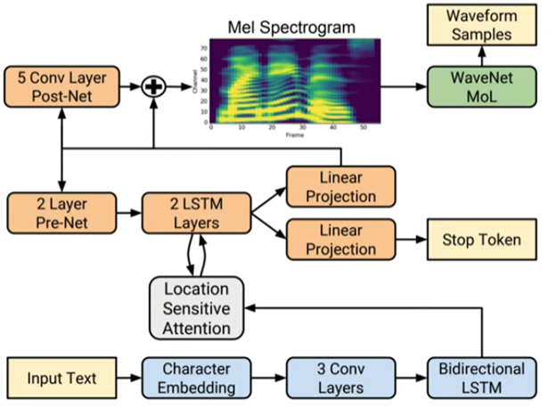
Рисунок 1 - архитектура tacotron2 - https://arxiv.org/pdf/1712.05884
Основные компоненты
Архитектура Tacotron 2 включает два основных компонента:
1. Первая нейросеть: выполняет роль энкодера, обрабатывая входящий текст и создавая промежуточное представление в виде спектрограммы. Спектрограмма отображает распределение частотных компонентов звука во времени, позволяя эффективно представить структуру речи.
Энкодер Tacotron 2 построен на основе рекуррентных нейронных сетей (LSTM), способных учитывать контекст предыдущих элементов текста при обработке каждого последующего символа. Это обеспечивает высокую точность передачи ритма, интонации и акцентов в синтезированном сигнале.
2. Вторая нейросеть: выступает в роли декодера, преобразующего спектрограмму обратно в аудиосигнал. Здесь применяется алгоритм WaveNet, разработанный ранее той же командой исследователей. WaveNet создаёт аудиосигнал путём пошагового предсказания следующего значения сигнала на основе предыдущего контекста, обеспечивая высокий уровень детализации и естественность звучания.
Особенности архитектуры
Давайте детально рассмотрим работу каждого компонента архитектуры Tacotron 2, реализованной в данном коде.
1. Encoder
Задача энкодера — превратить текст в компактное представление, которое отражает смысл и структуру предложений. Эта работа выполняется двумя этапами:
Структура:
class Encoder(nn.Module):
...
Основные элементы:
● Свёрточные слои: Последовательность линейных свёрток применяется к эмбеддингам символов текста. Каждая свёртка сопровождается нормализацией BatchNorm и функцией активации ReLU. Эти операции позволяют выявить локальные структуры и паттерны внутри текста.
● Двунаправленная LSTM: После свёрток используются двунаправленные рекуррентные слои (Bi-LSTM), позволяющие учесть связи между символами слева направо и справа налево одновременно. Таким образом формируется комплексное представление каждой буквы или символа.
Процесс:
1. Входящие эмбеддинги символов проходят через несколько слоёв свёрток, каждая свёртка выделяет важные признаки текста.
2. Затем полученный вывод передается двунаправленной LSTM, которая формирует скрытое состояние, содержащее всю необходимую информацию для дальнейшей обработки.
Таким образом, выходной сигнал энкодера представляет собой обогащённое семантическое представление текста, пригодное для декодирования звука.
2. Decoder
Декодер ответственен за создание аудиосигнала из представления текста, полученного энкодером. Он также имеет сложную многоступенчатую структуру.
Структура:
class Decoder(nn.Module):
...
Ключевые части:
● PreNet (Предварительный слой): Перед подачей на дальнейшую обработку входные сигналы предварительно обрабатываются несколькими полносвязанными слоями с нелинейностью Relu и Dropout. Этот модуль помогает предотвратить переобучение и упрощает обучение сети.
● Attention Mechanism (Механизм внимания): Используется для сопоставления элементов текста и аудио, позволяя декодеру концентрироваться на нужных участках текста при создании текущего фрагмента звука.
● RNN ячейки (Recurrent Neural Network Cells): Декодер основан на ячейках LSTM, работающих попеременно: одна — внимание-направляемая (для управления вниманием), вторая — создающая сам звуковой фрагмент.
● Output Projection Layer: Последний слой преобразует внутренние состояния декодера обратно в мел-спектральные характеристики (спектральное представление звука).
Работа декодера:
3. Изначальное случайное состояние подается в первый LSTM Cell.
4. Механизм внимания выбирает наиболее релевантные фрагменты из выхода энкодера, основываясь на предыдущем состоянии декодера.
5. Результат комбинируется с выходом первого LSTM и поступает во второй LSTM.
6. Выход второго LSTM предсказывает следующий кадр мел-спектра.
7. Прогресс повторяется до тех пор, пока вся фраза не будет синтезирована.
3. PostNet
Пост-процессор предназначен для улучшения мел-спектрального представления, вырабатываемого декодером. Основная цель — повысить точность и плавность результирующей голосовой волны.
Структура:
class Postnet(nn.Module):
...
Архитектура:
Последовательно применяются несколько конвoлюционных слоёв с активацией Tanh и нормализацией BatchNorm. Каждый слой слегка корректирует предыдущий выход, постепенно улучшая общий мел-спектр.
Задача:
Преобразовать грубый спектрографический сигнал, созданный декодером, в финальный высококачественный мел-спектр, который потом легко преобразуется в естественный человеческий голос.
4. Mechanism of Attention (Механизм внимания)
Так как размер текста и длина синтезируемого аудио различны, механизм внимания обеспечивает синхронизацию между ними. Класс Attention решает две основные задачи:
● Вычисляет коэффициенты внимания, показывающие степень важности разных позиций в тексте относительно конкретного момента звука.
● Использует эти веса для объединения представлений текста в единый контекст, подходящий для текущего шага декодирования.
class Attention(nn.Module):
...
Внутренняя логика:
● Сначала инициализируется скрытое состояние декодера.
● Затем для каждого шага создается распределение вероятностей над позициями в представлении текста.
● Распределение умножается на каждое слово текста, формируя взвешенное среднее (контекстное представление).
● Контекстное представление добавляется к скрытому состоянию декодера, обеспечивая связь между текстом и звуком.
5. Поддерживающие слои
Помимо основных блоков, имеются ещё несколько важных модулей:
● ConvNorm: Нормализованные свёрточные слои для стабилизации градиентов и ускорения обучения.
● LinearNorm: Полносвязные нормализованные слои для предотвращения взрыва градиентов.
● Embedding layer: Переводит символы текста в плотные числовые вектора (эмбеддинги).
Общий процесс работы модели:
8. Энкодер создает высокоуровневое представление текста.
9. Декодер, используя механизм внимания, генерирует мел-спектр поэтапно, учитывая предыдущие кадры и текущее положение в тексте.
10. Пост-процессор исправляет мел-спектр, повышая его точность.
11. Мел-спектр превращается в слышимый сигнал голосом.
Такая многослойная архитектура позволяет модели воспроизводить качественные и реалистичные голоса даже при сложных текстовых заданиях.
Тренировочный цикл для обучения модели Tacotron 2 включает в себя следующие ключевые этапы:
1. Импорт необходимых библиотек и модулей
2. Определение вспомогательных функций
Reduce Tensor - Используется для усреднения значений градиентов между несколькими GPU при распределённом обучении.
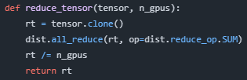
Init Distributed - Выполняет инициализацию распределённого режима обучения на нескольких GPU.
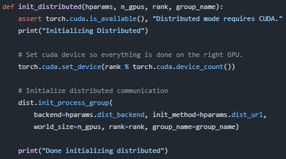
Prepare Dataloaders - Создаёт загрузчики данных для тренировки и проверки, учитывая необходимость параллельного обучения.
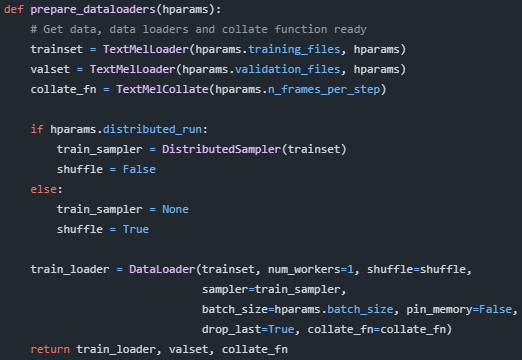
Prepare Directories and Logger - Готовит каталоги для сохранения чекпоинтов и журнала экспериментов.
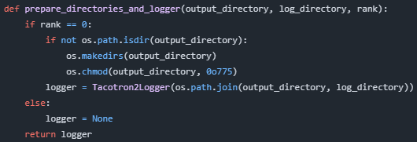
Load Model - Загружает модель Tacotron 2 и применяет механизмы оптимизации распределения вычислений.
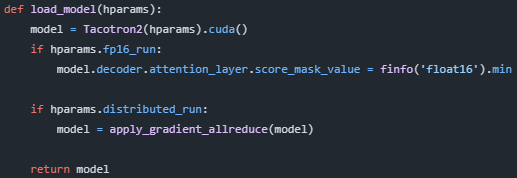
Warm Start Model - Нагревает начальные веса модели из предыдущего состояния, игнорируя некоторые слои, если это требуется.
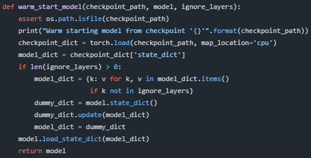
Load Checkpoint - Восстанавливает состояние модели и оптимизатора из сохранённой контрольной точки.
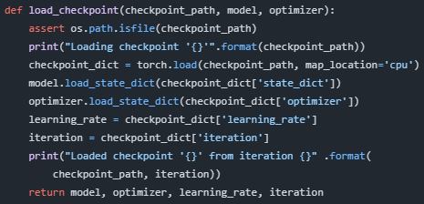
Save Checkpoint - Сохраняет состояние модели и оптимизатора в указанном месте.
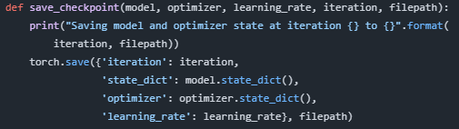
Validate - Проводит проверку качества модели на тестовых данных и записывает результаты в журнал.
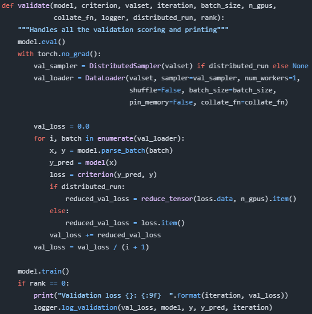
Train - Совершает весь процесс обучения
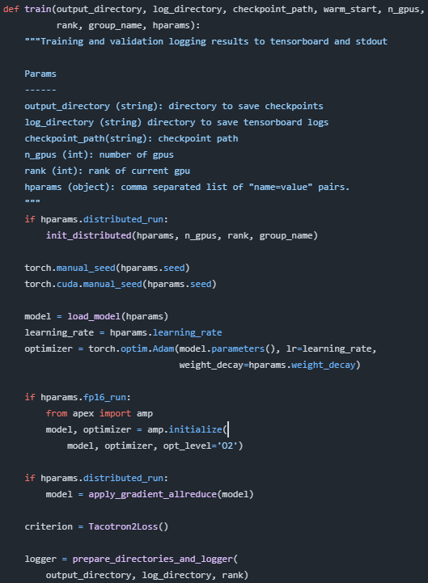
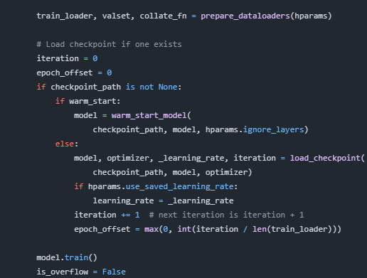

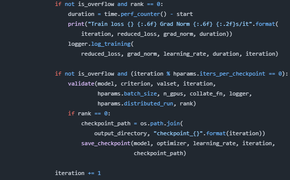
Рассмотрим подробно работу функции train, предназначенной для тренировки модели машинного обучения, в частности модели типа Tacotron 2, используемой для синтеза речи.
Параметры функции:
output_directory
: str # Каталог для сохранения чекпоинтов (контрольных точек).
log_directory : str # Каталог для хранения журналов TensorBoard.
checkpoint_path : str # Путь к контрольной точке для загрузки
модели.
warm_start : bool # Использовать ли режим "теплого
старта" (не загружать оптимизатор).
n_gpus : int # Количество GPU для распределённой
тренировки.
rank : int # Ранг текущего GPU в группе (для MPI).
group_name : str # Имя группы MPI (для параллельной
обработки).
hparams : object # Объект с гиперпараметрами модели.
Шаги тренировки:
1. Подготовка среды
Проверяется, должна ли использоваться распределённая обработка (distributed_run). Если да, запускается инициализация распределённого режима PyTorch:
if
hparams.distributed_run:
init_distributed(hparams, n_gpus, rank, group_name)
Также задаются случайные семена для детерминированности вычислений:
torch.manual_seed(hparams.seed)
torch.cuda.manual_seed(hparams.seed)
2. Загрузка модели и оптимизатора
Загружается сама модель и её оптимизатор:
model = load_model(hparams)
optimizer = torch.optim.Adam(model.parameters(), lr=learning_rate,
weight_decay=hparams.weight_decay)
При необходимости включаются возможности смешанной точности FP16:
if hparams.fp16_run:
from apex import amp
model, optimizer = amp.initialize(model, optimizer, opt_level='O2')
Затем, если используется распределённый режим, применяется градиентный all-reduce для синхронизации градиентов:
if hparams.distributed_run:
model = apply_gradient_allreduce(model)
Создается объект потери (loss function):
criterion = Tacotron2Loss()
И настраиваются каталоги для журнала и загрузчиков данных:
logger = prepare_directories_and_logger(output_directory,
log_directory, rank)
train_loader, valset, collate_fn = prepare_dataloaders(hparams)
3. Обработка контрольной точки (чекпоинт)
Если указан путь к контрольной точке, проверяется, нужен ли "теплый старт":
● Если задан warm_start=True, грузится только состояние модели, игнорируя оптимизатор.
● Иначе грузятся и модель, и оптимизатор, восстанавливая обучение с последнего состояния.
if checkpoint_path is not None:
if warm_start:
model = warm_start_model(checkpoint_path, model, hparams.ignore_layers)
else:
model, optimizer, _learning_rate, iteration =
load_checkpoint(checkpoint_path, model, optimizer)
Если установлена опция восстановления скорости обучения, она сохраняется:
if hparams.use_saved_learning_rate:
learning_rate = _learning_rate
Значение итерации увеличивается на единицу перед началом нового цикла:
iteration += 1
epoch_offset = max(0, int(iteration / len(train_loader)))
Модель переключается в режим обучения:
model.train()
4. Основной цикл обучения
Основной цикл проходит по эпохам и батчам:
for epoch in range(epoch_offset, hparams.epochs):
for i, batch in enumerate(train_loader):
Для каждого батча выполняются следующие шаги:
● Обнуляются градиенты модели.
● Парсятся входные данные и выполняется прямой проход (forward pass) модели.
● Вычисляется потеря (loss) и уменьшается на количество GPUs, если используются распределённые вычисления.
● Градиенты рассчитываются обратным распространением ошибок (backward pass), с учётом поддержки FP16.
● Ограничение нормы градиента предотвращает взрыв градиентов (gradient clipping).
● Оптимизатор обновляет веса модели.
Запись статистики и проверка валидирования происходят каждые N итераций:
if not is_overflow and (iteration %
hparams.iters_per_checkpoint == 0):
validate(...) #
Валидирование модели на тестовом наборе
if rank == 0:
save_checkpoint(...) # Сохранение чекпоинта
Итерация продолжается циклически до завершения эпохи.
Таким образом, функция обеспечивает тренировочный процесс с поддержкой распределённых вычислений, восстановлением состояний, управлением параметрами оптимизации и сохранением промежуточных результатов.